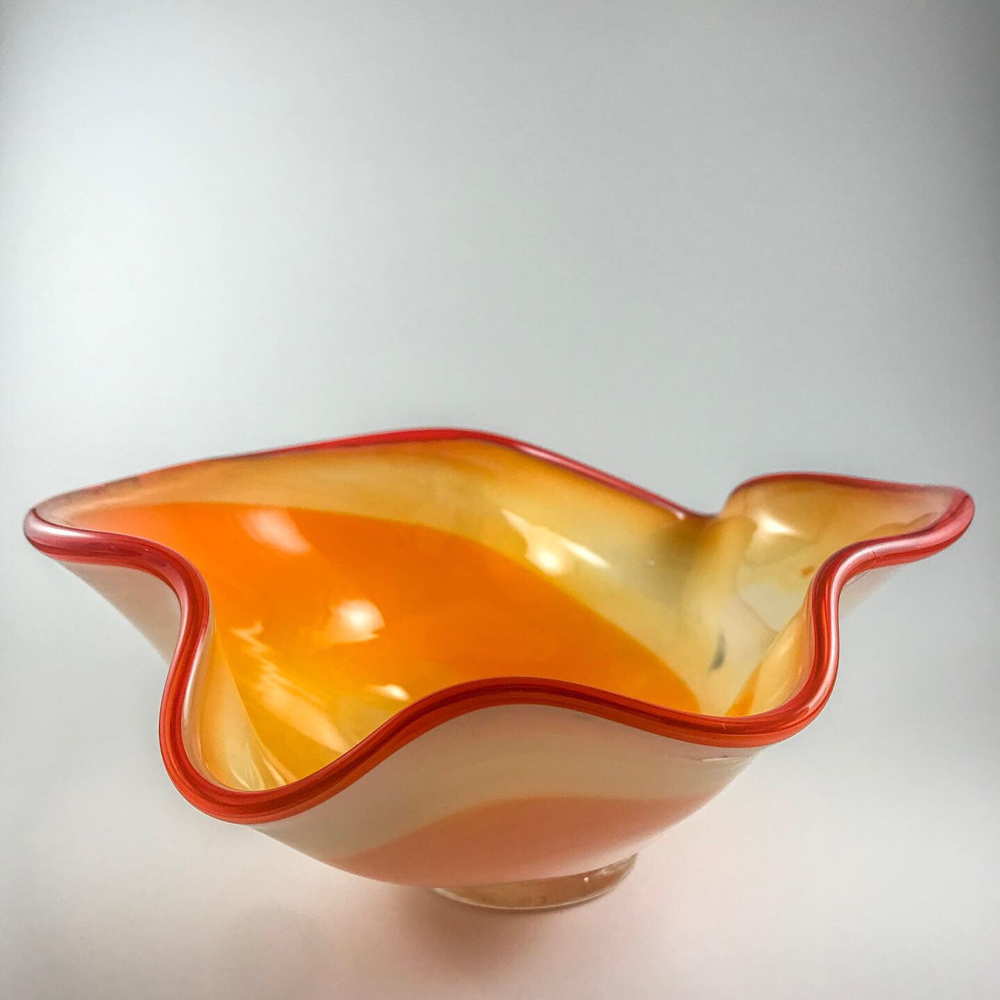
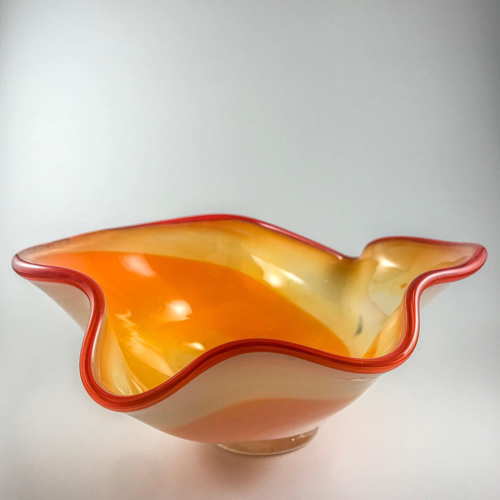
 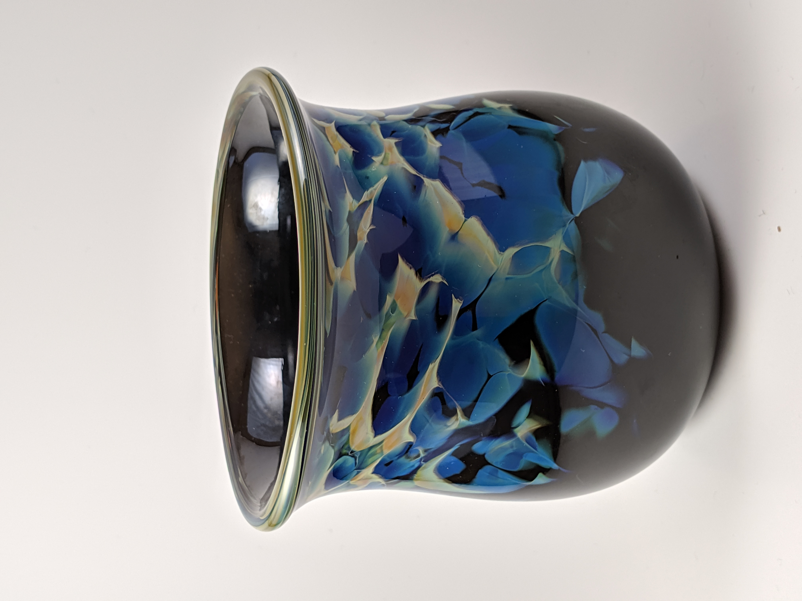
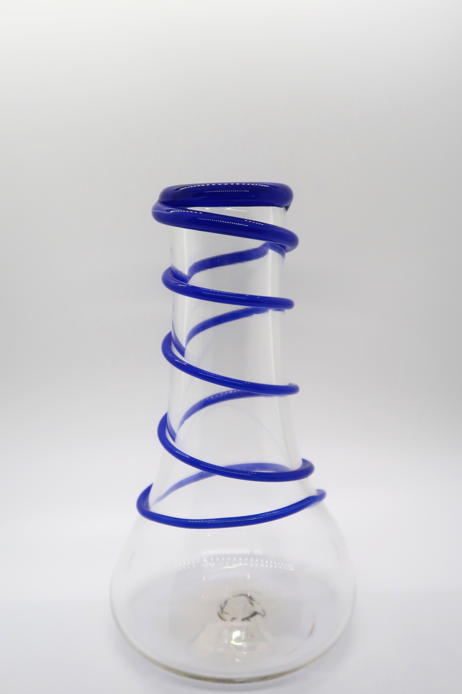
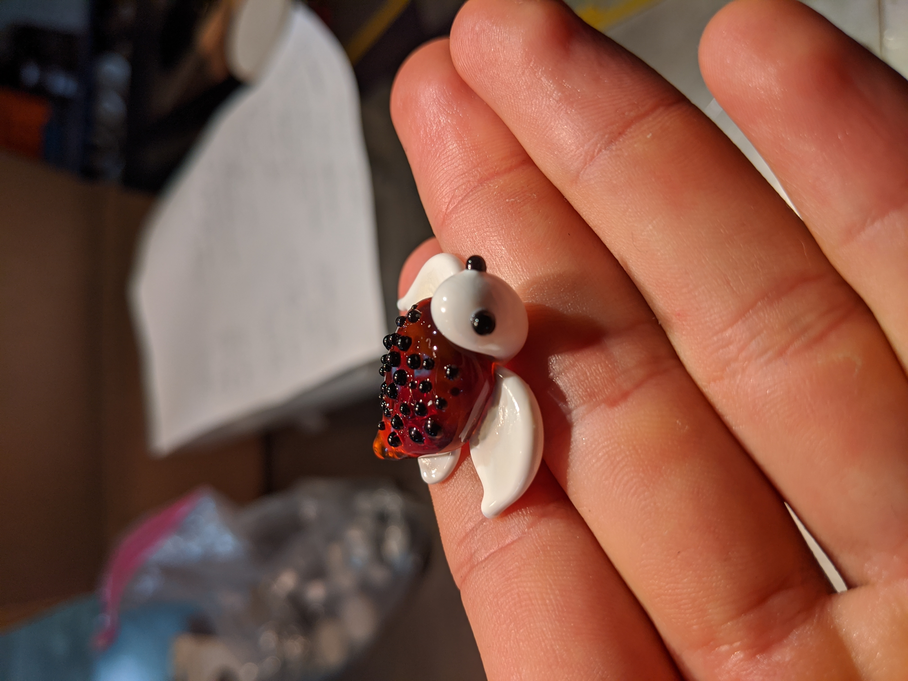
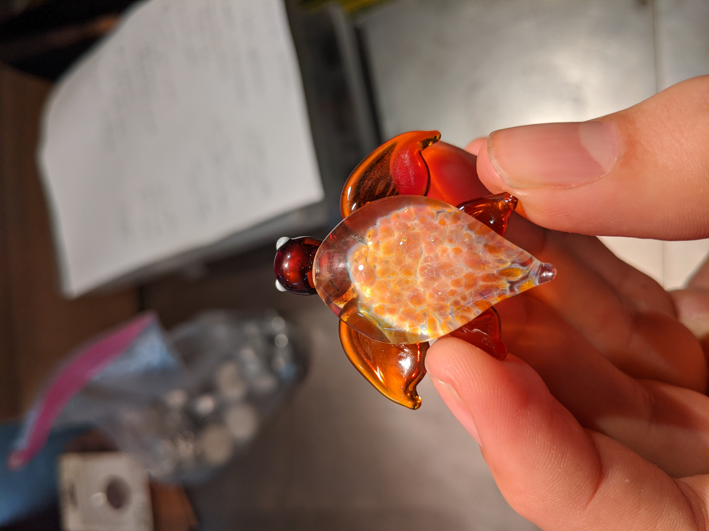
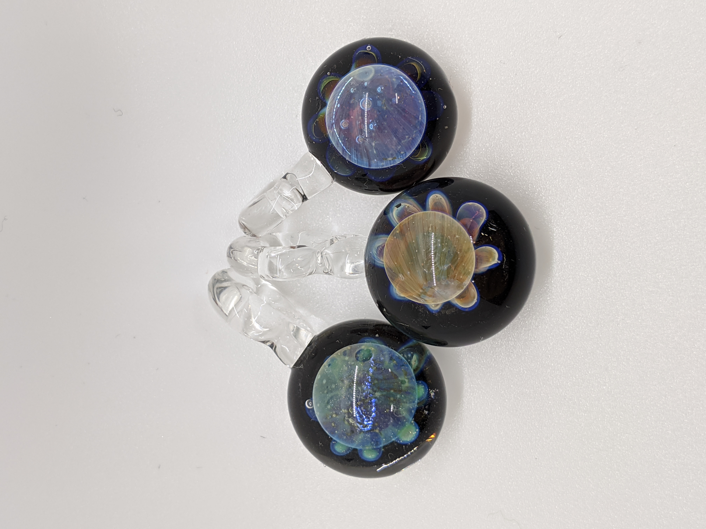
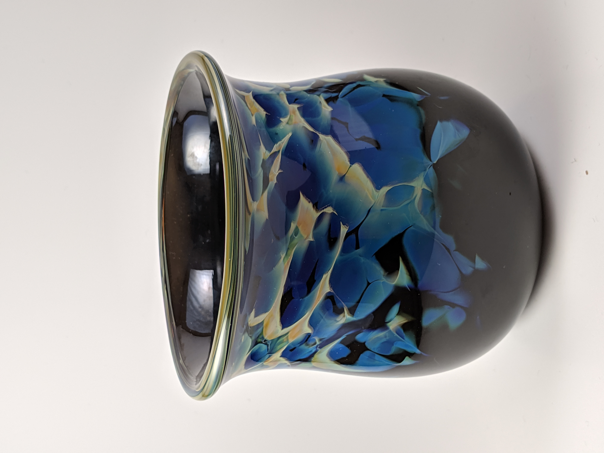
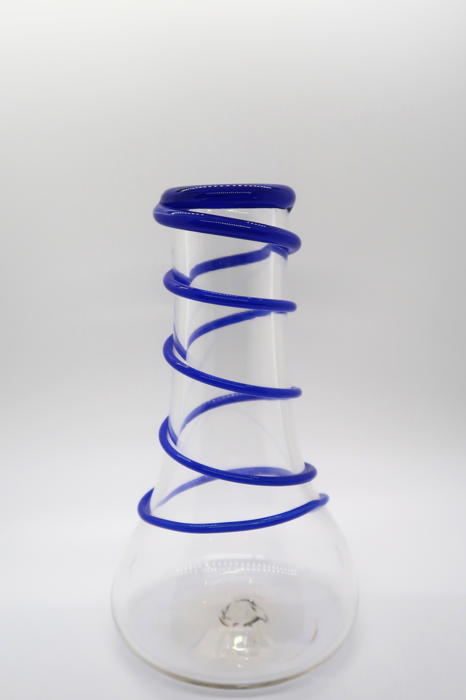
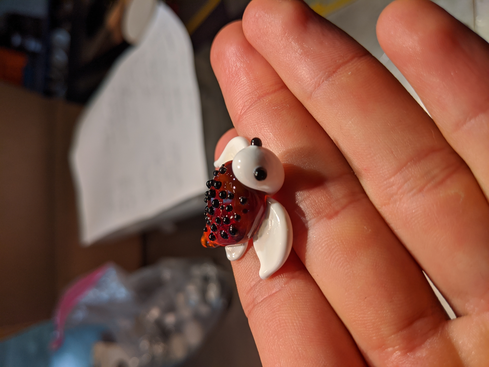
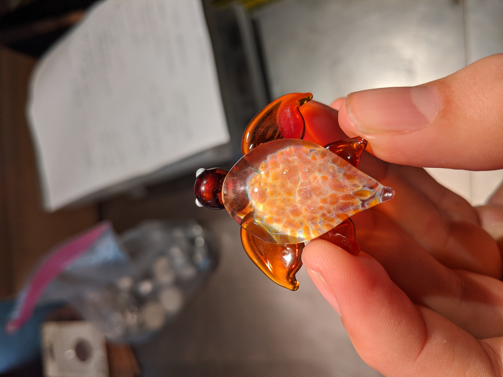
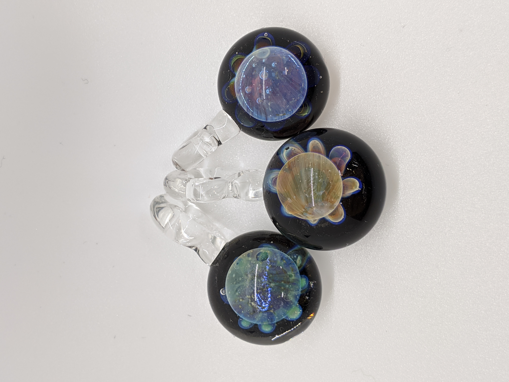
An Exploration of Glass
Soft and Borosollicate Glass
In early 2019, while I was working in Seattle, I decided to take an intoductory glass blowing class. I had an amazing teacher, Phillip Hickok (aka Swede), who noticed my genuine curiosty for the medium and invivited me to assist him on some personal projects. This quickly developed into apprenticing under him for the next 8 months. During the apprenticeship, I learned about the many facets of glass, the industry, the culture, the colors, the chemisty, the forms, and it's movement from a purely functional craft to a studio art. Most importantly, I also learned how to make mistakes, as glass is an incredibly delicate and unforgiving medium.
The pinnacle of the apprenticship was Swede offering me the opportunity to work with him as he assisted digital artist Reilly Donovan at the Tacoma Musuem of Glass. Reilly was not a glassblower, but as the resident artist of the museum he had commissioned a team of gaffers to help bring digitally developed shapes such as an altered mobius strip and triple nested torus to life in the form of glass. To work alongside a Swede and three other gaffers in front of a full audience at one of the most famous hot shops in the world, was one of the most memorable and rewarding experiences of my life.
Later that year I moved back to Boston as part of a career change and while working part-time at a climbing gym I began interning at the Fiamma Glass Studio in Waltham. Here I learned about the lampworking world, where things seemed to happen a lot slower due to the nature of working with Borosillicate glass. I was also exposed to new techniques, colors, forms, tools, and also culture. Towards the end of my time at the studio I began to assist teaching introductory classes which reinforced my passion for teaching and the belief that the best way to learn is to teach.
Year: 2019 -2020